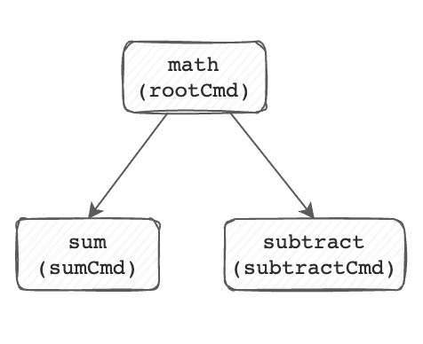

Adding subcommands to subcommands
So far, we've add the subtract and sum subcommands to the math root
command. But it's possible to also add subcommands to other subcommands.
Let's build a subcommand that logically groups subtract and add, called
arithmetic. Let's break out cobra-cli to build out the base subcommand
arithmetic.
$ cobra-cli add arithmetic
arithmetic created at /Users/me/.go/src/github.com/opdev/cobra-primer/math
With this in place, let's go ahead and disable the Run function so that calling
math arithmetic just displays help output.
var arithmeticCmd = &cobra.Command{
Use: "arithmetic",
Short: "basic arithmetic functions",
}
To move sum and subtract to be organized under arithmetic instead of the
root command math, just open sum.go and subtract.go to their init()
functions, and replace rootCmd.AddCommand with arithmeticCmd.AddCommand.
Here's what subtract.go's init function looks like now:
func init() {
arithmeticCmd.AddCommand(subtractCmd)
subtractCmd.Flags().BoolP("invert-sign", "i", false, "inverts the sign of the result.")
}
And our command "tree" went from this:

to this:

And our commands are logically grouped with the arithmetic subcommand:
$ go build . && ./math arithmetic --help
basic arithmetic functions
Usage:
math arithmetic [command]
Available Commands:
subtract subtract integers
sum add integers
Flags:
-h, --help help for arithmetic
Use "math arithmetic [command] --help" for more information about a command.
If you were scaffolding a net-new command using cobra-cli and you wanted it
organized under some command OTHER than the root command, you can pass the
--parent flag to cobra-cli which will organize the new command under the new
parent.